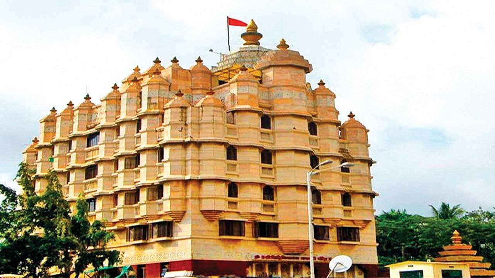
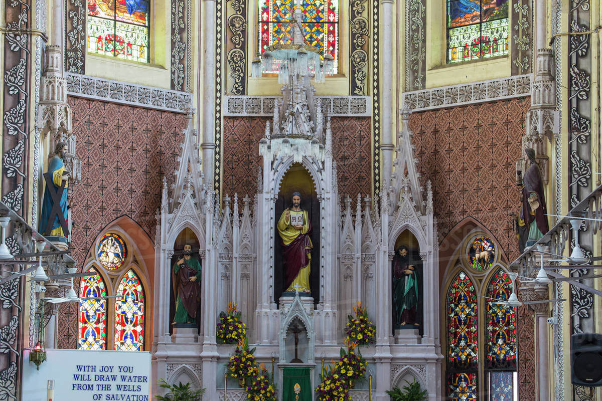
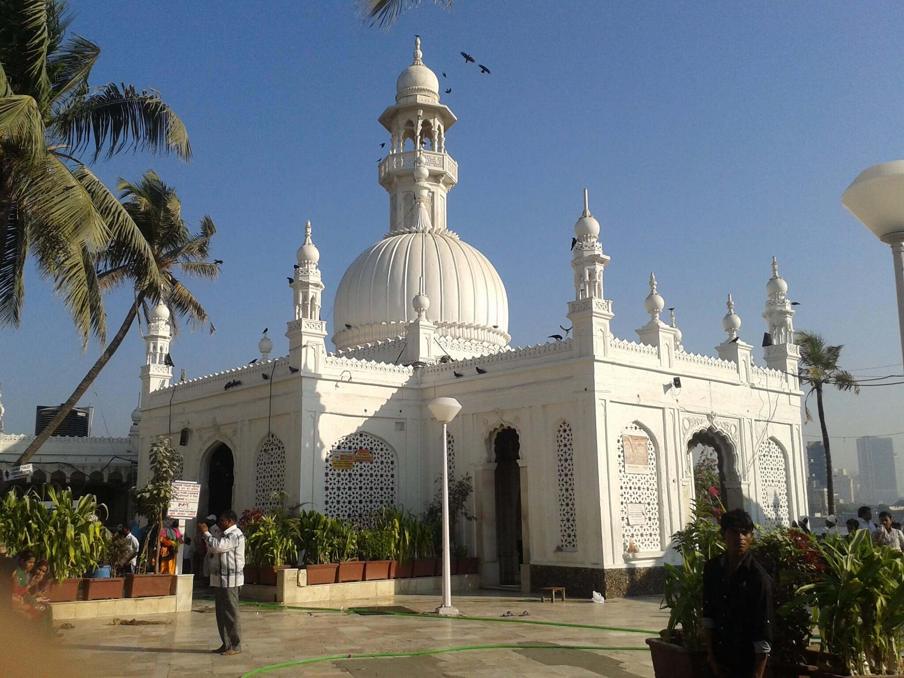
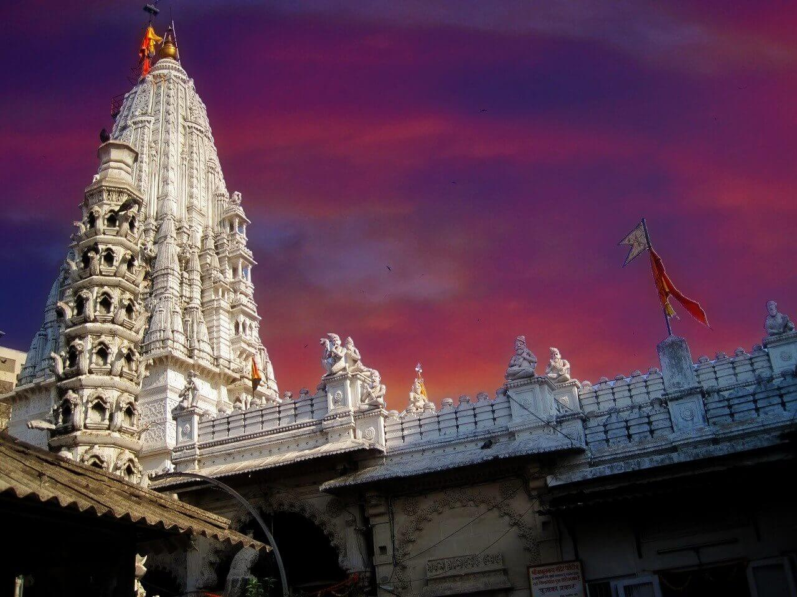
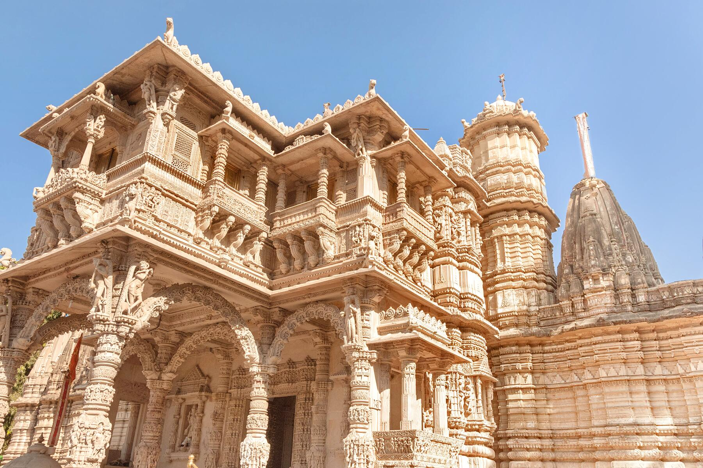
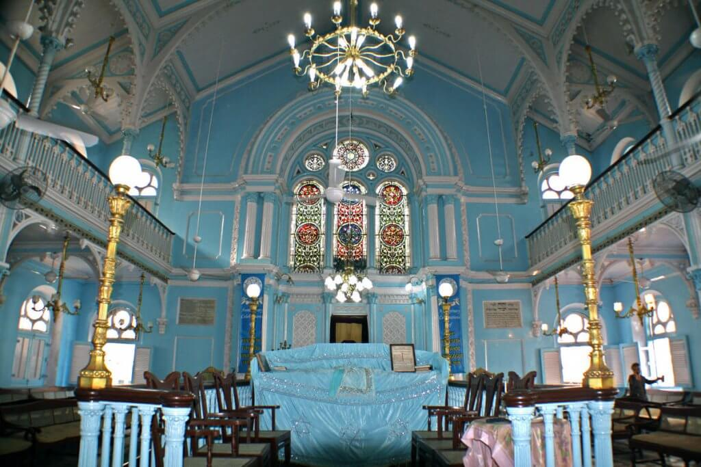
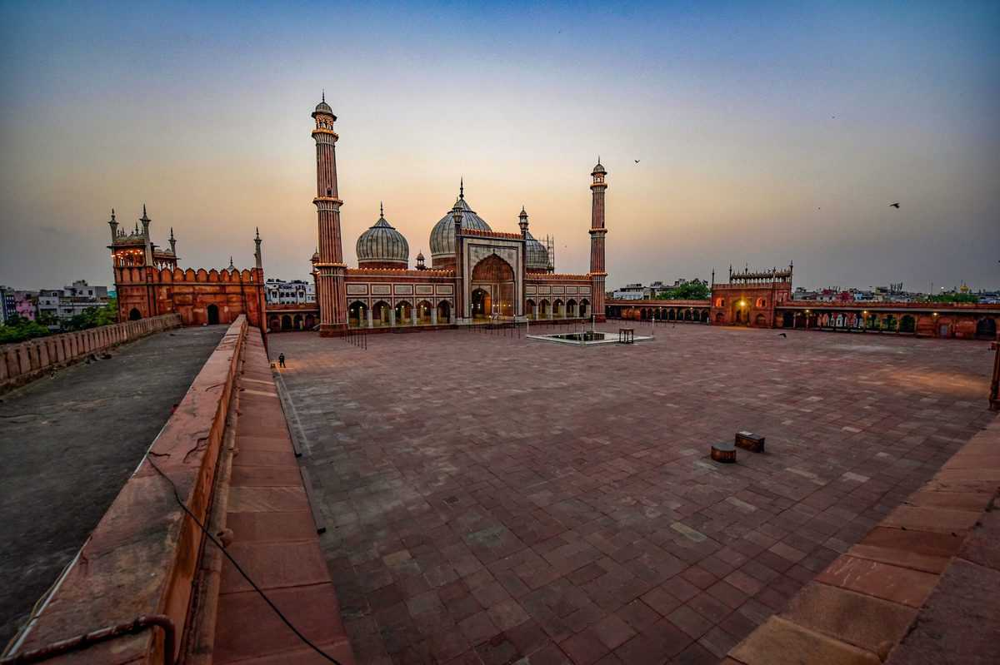

Spirituality
The temples perish, but the God still lives
Mystical Temples
The city that never sleeps yet somehow finds space for some tranquility and that is exactly what these famous temples in Mumbai offer. From peace to meditation to wishes wanting to come true, men and women of every religion find their sacred space in these temples.

Siddhivinayak Temple
Detail:The Siddhivinayak Temple is located in central Mumbai.This is a temple devoted to the Lord Ganesha. It is believed that whatever wish you make to the idols of this temple, you can be sure that it will be granted. Unlike many other Hindi temples where only Hindus are allowed to enter, this temple welcomes people of every religion with open arms.
Dadar , Mumbai 20k+ Visitors / Day

Holy Name Cathedral
Detail:This Cathedral is located in South Mumbai, in Colaba, opposite the YMCA.It is well-known for its gentle murals, pipe organ, which was a gift from numerous Popes. The huge bell which is found hanging outside the church was also a gift from Pope Paul VI who had visited the Holy Name Cathedral in the year 1964
Colaba , Mumbai 30k+ Visitors / Day

Haji Ali Dargah
Detail:Dargah located on Central South Mumbai in center of ocean, a little distance away from the Mahalaxmi Railway Terminal. This place is considered among one of the top ten places of interest in the city of Mumbai. In the year, 1431, a very rich Sufi saint and Muslim Merchant named Pir Haji Ali Shah Bukhari had built this mosque and tomb.The man was encouraged to change his course in life after his visit to Mecca. The Haji Ali tomb also contains his body.
Mahalaxmi , Mumbai 10k+ Visitors / Day

Babulnath Temple
Detail:This temple is located near the Marine Drive, on the Malabar Hills, in south Mumbai.The Babulnath Temple is another one of the ancient temples in Mumbai. This temple is dedicated to the Hindu Lord Shiva in the form of a Babul Tree (Acacia). The Babulnath Temple is located a thousand feet above the sea level.
Marine Lines , Mumbai 10k+ Visitors / Day

Jain Temple - Mumbai
Detail:Babu Amichand Panalal Adishwarji Jain Temple is a very beautiful Jain Temple in Mumbai. Jain Temples are as it is famous for their beauty and the one in Mumbai is considered to be one of the most wonderful Jain Temples in India.The entrance is artistically sculptured giving the whole place an aesthetic richness.
Asangaon , Mumbai 5k+ Visitors / Day

Keneseth Eliyahoo Synagogue
Detail:The place is located close to the Rhythm House in Mumbai, in the Kala Ghoda district. The Keneseth Eliyahoo Synagogue was built in the year 1884 by the two brothers Albert and Jacob Elias Sassoon. These brothers had built this place in memory of their beloved father Eliyahoo Sassoon.It was built with many beautiful pillars, stained glass windows and a very beautiful chandelier. In the afternoons this place is beautifully lighted by the sunlight
Colaba , Mumbai 10k+ Visitors / Day
Global Vipassana Pagoda
Detail:Pagoda is a meditation dome in the outskirts of Mumbai, which is built as a tribute to Sayagyi U Ba Khin, a Vipassana teacher from Myanmar.Although Global Pagoda is open throughout the year, it would be best to visit it during the winter months – from November to February. The temperature is pleasant enough for you to comfortably explore the premises.
Gorai , Mumbai 10k+ Visitors / Day

Jama Masjid
Detail:The largest and oldest mosque in Mumbai, Jama Masjid is located in the southern part of Mumbai near Crawford Market. The original structure of the mosque was destroyed by the British in 1770, however, the current structure too dates back to 1802 and also has a water tank inside it! The architecture of this building is quite magnificent
CST , Mumbai 10k+ Visitors / Day

Lalbaugcha Raja
Note:Only adviced to visit during Ganesh Chaturthi(As idol is only available in this time). Detail:Lalbaugcha Raja was established in 1934 and is named on the premise of being developed in the Lalbaugcha Market, Mumbai, India.It is trusted that in the year 1932, the commercial center was shut. As the desire of those merchants was satisfied, they set up an uncommon icon of Lord Ganesha. From that point forward this Lalbaugcha Raja from 1934 is considered for satisfying the desires of his aficionados.
Lower Parel , Mumbai 1M+ Visitors / Day
Amchi-Mumbai
Amchi-Mumbai is tourist guide and accomodation recommendation website that help the tourists with best place to visit in mumbai and hotel to stay in best place.
Information
Career
Case Studies
Trust & Safety
Business
Social Impact
Equity & Diversity
Logo & Guideline
Navigation
Home
About Us
Tourist Place
Hotels
WaterPark
Contact Us
Features
Request A Quote
Copyright Amchi-Mumbai 2022 . All right reserved.
Made with by Siddesh Jaiswal.